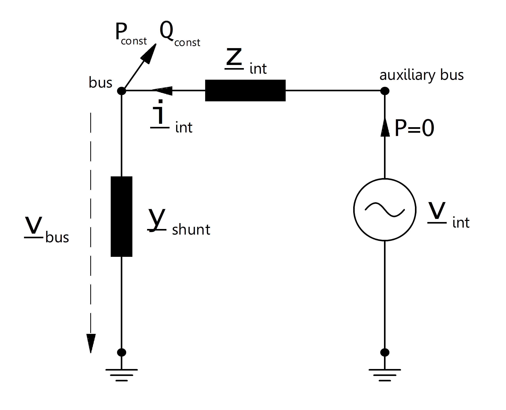

Extended Ward¶
См.также
Create Function¶
Input Parameters¶
net.xward
Parameter |
Datatype |
Value Range |
Explanation |
name |
string |
name of the extended ward equivalent |
|
bus* |
integer |
index of connected bus |
|
ps_mw* |
float |
constant active power demand [MW] |
|
qs_mvar* |
float |
constant reactive power demand [MVar] |
|
pz_mw* |
float |
constant impedance active power demand at 1.0 pu [MW] |
|
qz_mvar* |
float |
constant impedance reactive power demand at 1.0 pu [MVar] |
|
r_ohm* |
float |
\(>\) 0 |
internal resistance of the voltage source [ohm] |
x_ohm* |
float |
\(>\) 0 |
internal reactance of the voltage source [ohm] |
vm_pu* |
float |
\(>\) 0 |
voltage source set point [p.u] |
in_service* |
boolean |
True / False |
specifies if the extended ward equivalent is in service. |
*necessary for executing a power flow calculation.
Electric Model¶
The extended ward equivalent is a ward equivalent: with additional PV-node with an internal resistance.
{kind=link}
The constant apparent power is given by:
The shunt admittance part of the extended ward equivalent is calculated as described here:
The internal resistance is defined as:
The internal voltage source is modelled as a PV-node (generator) with:
Result Parameters¶
net.res_xward
Parameter |
Datatype |
Explanation |
p_mw |
float |
active power demand of the ward equivalent [MW] |
q_mvar |
float |
reactive power demand of the ward equivalent [MVar] |
vm_pu |
float |
voltage at the ward bus [p.u] |